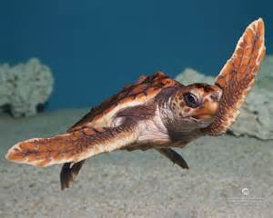

La tartaruga marina
Le tartarughe marine sono rettili (come serpenti, coccodrilli e lucertole) e derivano da antenati terrestri, tornati alla vita acquatica. Per questo motivo hanno un corpo più slanciato, di forme spiccatamente idrodinamiche, con gli arti trasformati in efficaci pinne natatoie. Il corpo è tipicamente racchiuso in un robusto ma leggero guscio, formato da una parte dorsale, detta carapace, e da una ventrale, detta piastrone.
Sono prive di denti, ma possiedono un becco corneo dai margini affilati (ranfoteca). Olfatto e gusto sono sensi molto sviluppati, attraverso i quali avvertono la presenza di predatori, ricercano il cibo e riconoscono il territorio. La dieta può essere carnivora, erbivora o onnivora a seconda delle specie ed anche dell'età.
Pur essendo ben adattate alla vita acquatica, le tartarughe marine mantengono un forte legame con la terraferma, dove depongono le uova e, ovviamente, dove nascono i piccoli. Le femmine tornano a deporre le uova sulla stessa spiaggia dove sono nate o in prossimità di questa. Le femmine, pur deponendo più volte nell'arco di una stagione per un totale di diverse centinaia di uova, non nidificano tutti gli anni, ma a due o tre anni di distanza. I piccoli sono soggetti a una elevatissima mortalità nei primi anni di vita e solo una percentuale minima di essi raggiunge l'età adulta.
Le tartarughe sono molto sensibili ai cambiamenti introdotti dall'uomo nell'ambiente e particolarmente vulnerabili, anche a causa della loro lenta capacità di riproduzione che viene raggiunta solo dopo molti anni di vita (da 15 a 30 anni). Oggi molte specie sono a rischio di estinzione